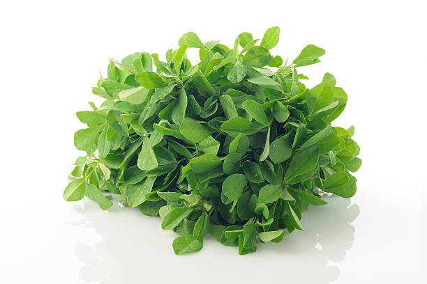

1. Seasons for Growing Fenugreek Leaves

Fenugreek leaves thrive in cooler weather. The ideal growing seasons are:
- Spring: Fenugreek can be sown in early spring as the soil warms up. It grows best when temperatures are between 60-70°F (15-21°C).
- Fall: In warmer climates, fenugreek can be planted in late summer or early fall for a late-season harvest.